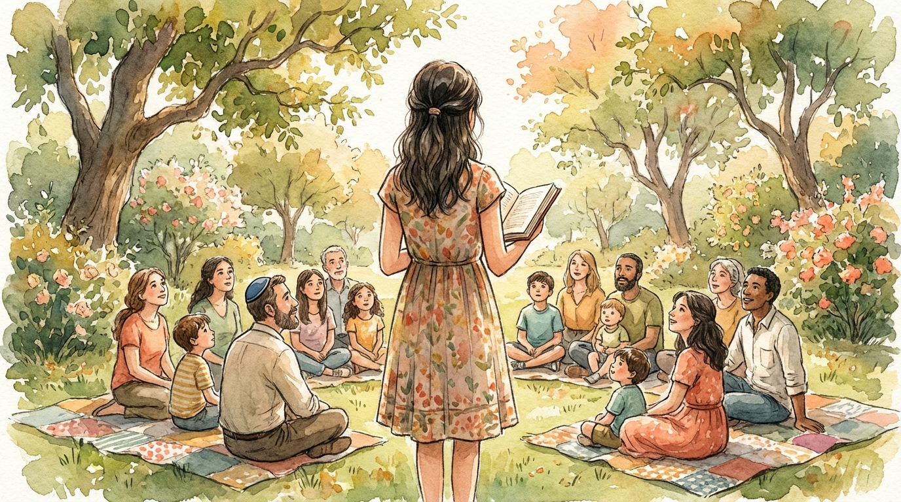

A two-year journey for families in Atlanta, rooted in community, guided by real relationships, and designed to make Jewish coming-of-age meaningful.
Most b'nai mitzvah prep focuses on the ceremony: learn your portion, rehearse, get through the day. Tish's Brit Mitzvah program is different — a two-year cohort experience built on the Moving Traditions framework, led by a dedicated educator, where small groups of kids and families go through this milestone together.
More than a class. More than a tutor. A community.
| Traditional Prep | Brit Mitzvah at Tish | |
|---|---|---|
| Duration | 6–12 months | 2 full years — time to grow, not just survive |
| Format | Individual tutoring | Cohort of 4–6 peers, same group the whole way |
| Focus | The ceremony & performance | Identity, values, and relationship with Jewish life |
| Learning style | Desk & textbook | Music, nature, hands-on, embodied |
| Community | Show up for the big day | Part of Tish year-round — Shabbat, Havdalah, potlucks |
| Family role | Logistics & party planning | Co-learners, hosts, and active participants |
| Inclusivity | Often assumes prior knowledge | No Hebrew or synagogue affiliation required |
About one Sunday per month from August through May — plus camping retreats, community events, and family gatherings.
Introduction to Jewish values, music, and outdoor adventure. Guest speakers from across Atlanta's Jewish community. Kids begin showing up at Tish events — experiencing the community firsthand as participants.
Deeper study and service, supported by a personal mentor. Students organize and lead songs, activities, and community programs — culminating in leading a community-wide event.
Four outdoor, camping-style retreats over the two years — fall and spring. Immersive Shabbat in nature that builds bonds between kids, families, and the broader community.
Ten Sundays per year, roughly two hours each. Hands-on learning that blends Jewish text, music, nature, personal reflection, and home-based ritual practice.
Built on a nationally recognized framework — participatory, embodied, and hands-on. Music, nature, and ritual practice alongside text study and personal reflection.

The brit mitzvah ceremony is designed to reflect each student's individuality while honoring Jewish tradition. You don't have to start from scratch — we offer ceremony templates based on what previous families have done, and we'll connect you with rabbis and tutors who know this program.
These are illustrative starting points. By the time your child reaches this stage, we'll have a library of ceremony examples from families who've been through the program.
Tish families built this program from scratch because they wanted something better for their kids.
Families typically enroll in 5th grade, with the bar mitzvah or bat mitzvah celebration around age 12–13. Every family's timeline is different — if yours doesn't fit neatly, reach out.
Tish is a home for people in Atlanta who long for deep connection with Jewish spirituality, identity, community, and practice. We gather for Shabbat, Havdalah, holidays, singing, and shared meals. Learn more about us →
If your child is approaching b'nai mitzvah age and you're looking for something deeper than the standard prep track, we'd love to hear from you.
Register your interest early. This is a community-organized program — we need to know there's a cohort before we can build one.
No commitment — just a chance to learn more and see if it's a good fit.